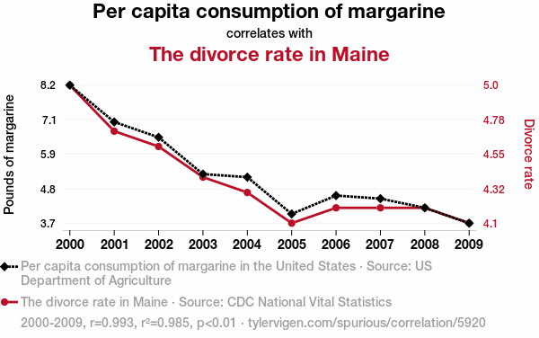

En ocasiones, nuestras variables pueden tener una relación causal (\(X\) causa a \(Y\)), sin embargo, también es posible que tengamos:
Correlaciones espurias.
Factores omitidos.
Causalidad inversa.
Sesgos de selección.
Estas situaciones pueden llevar a los policymakers a tomar decisiones equivocadas.
“Correlación no implica causalidad”
En una correlación espuria, dos variables parecen estar relacionadas entre sí (sus valores cambian juntos, aparentando una relación) pero en realidad no hay una conexión causal entre ellas. La relación aparente es falsa, y puede surgir por casualidad o por una tercera variable omitida.

[Vigen, T. (s.f.)](https://www.tylervigen.com/spurious/correlation/5920_per-capita-consumption-of-margarine_correlates-with_the-divorce-rate-in-maine)
Identificando la causalidad
Relación entre presencia policial y tasas de criminalidad en Carolina del Norte, entre 1981 y 1987.
Call:
lm(formula = rcrmrte ~ lpolpc, data = Crime)
Residuals:
Min 1Q Median 3Q Max
-1.26065 -0.13341 -0.00217 0.13561 1.42218
Coefficients:
Estimate Std. Error t value Pr(>|t|)
(Intercept) 1.64617 0.13033 12.63 <2e-16 ***
lpolpc 0.25362 0.02001 12.67 <2e-16 ***
---
Signif. codes: 0 '***' 0.001 '**' 0.01 '*' 0.05 '.' 0.1 ' ' 1
Residual standard error: 0.2644 on 628 degrees of freedom
Multiple R-squared: 0.2036, Adjusted R-squared: 0.2024
F-statistic: 160.6 on 1 and 628 DF, p-value: < 2.2e-16
Identificando la causalidad
¿Aumentar la presencia policial de verdad causa un incremento en las tasas de criminalidad?
¿Un aumento en las tasas de criminalidad lleva a mayor presencia policial? (Causalidad inversa)
¿Será que aumentar la presencia policial no sirve para controlar la criminalidad? (Impacto de la intervención)
Requerimos algo más que una simple regresión para obtener respuestas a estas preguntas.
Identificando la causalidad
Para identificar relaciones de causalidad hay varias herramientas empíricas. La herramienta ideal son los experimentos, pero estos no siempre son factibles en las ciencias sociales, por lo que se hace necesario recurrir a los métodos observacionales (también llamados cuasi-experimentales).
Métodos experimentales
Podemos hacer un experimento, en el que de forma controlada manipulamos una de las variables (p.e. la presencia policial) y evaluamos qué ocurre en la otra variable.
Pero esto tiene otras implicaciones:
¿Podemos controlar el experimento, las demás variables y los factores externos?
¿Sería ético dejar a parte de la población sin presencia policial para obtener este resultado para la ciencia?
¿Cuál es el costo de hacer este tipo de experimentos? ¿Es fácil coordinarlo y obtener los resultados?
¿Qué validez tendría el experimento en otros lugares?
Ensayos aleatorizados (Randomized Trials)
Son un método experimental que se caracteriza por la asignación aleatoria de la muestra.
Asignación aleatoria: se asignan los individuos de la muestra a dos grupos al azar, garantizando que no haya diferencias adicionales entre ambos grupos (Ley de los grandes números), lo que elimina el sesgo de selección:
Grupo de Tratamiento: aquellos que recibirán la intervención.
Grupo de Control: aquellos que no recibirán la intervención.
Se busca el efecto del tratamiento sobre los individuos del primer grupo, asumiendo que en ausencia de esta intervención, tendrían un resultado semejante al del segundo grupo, dado que las características de ambos grupos son las mismas.
Se considera que proporcionan la mejor evidencia en materia de inferencia causal. Pero pueden tener problemas de validez externa y dificultades éticas.
Ensayos aleatorizados (Randomized Trials)
Para los \(i\) individuos, se tiene una dummy\(D_i = 1\) en el grupo de tratamiento y \(D_i = 0\) en el grupo de control. La variable dependiente es \(Y_i\): \(Y_{0i}\) en los individuos no tratados, y \(Y_{1i}\) en los tratados. Por la asignación aleatoria, sabemos que \(E[Y_{0i}|D_i=1]=E[Y_{0i}|D_i=0]\) si no tratamos ningún individuo. Si \(Y_{1i}=Y_{0i}+\kappa\), entonces:
\[
E[Y_i|D_i=1]-E[Y_i|D_i=0]
\]
\[
= E[Y_{1i}|D_i=1]-E[Y_{0i}|D_i=0]
\]
\[
=E[Y_{0i}+\kappa|D_i=1]-E[Y_{0i}|D_i=0]
\]
\[
=\kappa + E[Y_{0i}|D_i=1]-E[Y_{0i}|D_i=0]
\]
\[
=\kappa
\]
Ensayos aleatorizados (Randomized Trials)
En conclusión, el efecto \(\kappa\) de la intervención \(D_i\) se encuentra mediante la diferencia en el resultado de los individuos tratados frente al resultado de los individuos no tratados.
[Simkus, J. (2024)](https://www.simplypsychology.org/randomized-controlled-trial.html)
Ensayos aleatorizados (Randomized Trials)
Un ejemplo es el de Rogger et al (2023), quienes estudiaron el impacto del programa de mejoramiento de infraestructura pública de vivienda “Hábitat” sobre el desarrollo de las empresas privadas locales en 370 barrios seleccionados al azar de 68 ciudades mexicanas, comparando con barrios no elegidos para el programa.
[Rogger et al (2023)]
Ensayos aleatorizados (Randomized Trials)
El programa invertía en pavimentación, electrificación, construcción y mantenimiento de amenidades residenciales, centros comunitarios y escenarios deportivos.
En los barrios beneficiados se encontraron efectos al terminar el programa de inversiones e incluso seis años después: crecimiento de los salarios, ingresos y stocks de capital de empresas de servicios.
[Rogger et al (2023)]
Métodos Observacionales o Cuasi-Experimentales
Cuando no es posible realizar un experimento, se debe recurrir a otras alternativas. Algunas de las más populares son:
Variables instrumentales (IV).
Diferencias en diferencias (Diff-in-Diff).
Regresiones discontinuas (RDD).
Diferencias en diferencias (Diff-in-Diff)
Se parte de dos grupos, un grupo que recibió una intervención, y otro que no la recibió.
Se asumen tendencias paralelas: el comportamiento de los individuos de ambos grupos, antes del tratamiento, es semejante. También habría sido semejante en caso de no haber recibido el tratamiento.
Diferencias en diferencias (Diff-in-Diff)
Se parte de dos grupos, un grupo que recibió una intervención, y otro que no la recibió.
Se asumen tendencias paralelas: el comportamiento de los individuos de ambos grupos, antes del tratamiento, es semejante. También habría sido semejante en caso de no haber recibido el tratamiento.
Diferencias en diferencias (Diff-in-Diff)
Sea \(Y_{i,t}\) la variable a evaluar para el individuo \(i\) en el periodo \(t\), el estimador de diferencias en diferencias es:
Es decir, se evalúa el cambio en el resultado para cada uno de los grupos, y luego se encuentra la diferencia entre ambos cambios. Bajo el supuesto de tendencias paralelas, esta diferencia se atribuye al hecho de haber recibido el tratamiento.
En una regresión lineal, podemos evaluar el efecto del tratamiento así:
Donde \(Tratamiento_i\) y \(Post_t\) son dummies que muestran si el individuo fue tratado (\(Tratamiento_i = 1\)) o no (\(Tratamiento_i = 0\)), y si el periodo es después (\(Post_t = 1\)) o antes (\(Post_t = 0\)) del tratamiento.
Diferencias en diferencias (Diff-in-Diff) - Ejercicio en R
*En 1973, el estado de Connecticut redujo la edad mínima para adquirir licor de 21 a 18 años. Angrist & Pischke (2011) analizan este cambio de política.
*¿Qué efecto tuvo esto en las tasas de mortalidad en accidentes de tránsito de la población de 18 a 20 años?
*Comparemos estos datos con los de Arkansas, estado que mantuvo en 21 la edad mínima para adquirir licor.
library(plm) # Librería para panel de datoslibrary(tidyverse) # Paquete de librerías para procesamiento y graficaciónDeaths <-read_csv("deaths.csv") # Cargamos base de datosDeaths <- Deaths |>filter(state %in%c(5,9), # Filtramos los estados 5 (Arkansas) y 9 (Connecticut) agegr =="18-20 yrs", # Filtramos las edades que nos interesan year <=1983, # Filtramos el periodo de tiempo a evaluar dtype =="MVA") |># Filtramos para accidentes de tránsito dplyr::select(year, state, mrate) |># Seleccionamos las variables que nos interesanmutate(Connecticut = (state ==9), # Creamos nuestra dummy de Estado (Que determina el tratamiento)PostTreatment = (year >=1973)) # Creamos nuestra dummy de periodo (Que determina el tratamiento)
Diferencias en diferencias (Diff-in-Diff) - Ejercicio en R
ggplot(data = Deaths, aes(x = year, y = mrate, color =factor(state))) +geom_line(lwd =1.1) +labs(x ="Año", y ="Tasa de mortalidad en accidentes de tránsito, 18-20 años", color ="Estado") +geom_vline(xintercept =1972.5, color ="#123524", lty =3, lwd =1.1) +scale_color_manual(values =c("5"="turquoise", "9"="darkblue"),labels =c("5"="Arkansas", "9"="Connecticut")) +theme_classic()
Se presentó una reducción de la mortalidad en accidentes de tránsito tras la venta legal de licor a esta población. ¿Qué más podemos decir al respecto?
Diferencias en diferencias (Diff-in-Diff) - Ejercicio en R
El estimador de diff-in-diff nos dice que el efecto de este cambio en la política fue un aumento de la tasa de mortalidad anual de 35 de cada 100.000 habitantes.
Call:
lm(formula = mrate ~ Connecticut + PostTreatment + (Connecticut *
PostTreatment), data = Deaths)
Residuals:
Min 1Q Median 3Q Max
-18.067 -6.576 -1.244 6.410 19.489
Coefficients:
Estimate Std. Error t value Pr(>|t|)
(Intercept) 79.348 5.922 13.399 1.23e-12 ***
ConnecticutTRUE -41.664 8.375 -4.975 4.43e-05 ***
PostTreatmentTRUE -25.512 6.681 -3.819 0.000832 ***
ConnecticutTRUE:PostTreatmentTRUE 34.986 9.448 3.703 0.001112 **
---
Signif. codes: 0 '***' 0.001 '**' 0.01 '*' 0.05 '.' 0.1 ' ' 1
Residual standard error: 10.26 on 24 degrees of freedom
Multiple R-squared: 0.5552, Adjusted R-squared: 0.4996
F-statistic: 9.986 on 3 and 24 DF, p-value: 0.0001854
Diseños de Regresión Discontinua (RDD)
Se compara el desempeño de dos poblaciones similares que difieren en el hecho de haber recibido una intervención o no haberla recibido. La comparación se hace en el segmento de la muestra más cercano al punto de corte que determina la intervención o no. Se requiere que la muestra sea claramente separable en dos tramos.
Diseños de Regresión Discontinua (RDD)
Supuestos:
No manipulación: los individuos no pueden moverse de un tramo de la muestra al otro tramo.
Continuidad: los individuos cercanos al umbral de la intervención, a ambos lados de este, son similares entre si.
Diseños de Regresión Discontinua (RDD)
Para modelar una regresión discontinua, incluimos el tratamiento \(D_i\) como una dummy binaria en una regresión lineal en la que también tenemos en cuenta la variable \(X_i\) sobre la cual se establece el umbral de corte \(c_0\), y otras variables de control.
Diseños de Regresión Discontinua (RDD) - Ejercicio en R
Con datos ficticios, analizaremos el impacto de un programa de preparación para la admisión a la universidad.
exams <-read_csv("exams.csv")ggplot(data = exams, aes(x = initial_test_score, y = university_admission_score)) +geom_point(color ="darkblue", size =2) +labs(x ="Prueba de selección al programa", y ="Examen de admisión a la universidad") +theme_classic()
Diseños de Regresión Discontinua (RDD) - Ejercicio en R
Call:
lm(formula = university_admission_score ~ initial_test_score,
data = exams)
Residuals:
Min 1Q Median 3Q Max
-32.062 -9.430 -0.430 7.602 31.604
Coefficients:
Estimate Std. Error t value Pr(>|t|)
(Intercept) -36.197 5.700 -6.35 6.74e-09 ***
initial_test_score 28.738 1.617 17.77 < 2e-16 ***
---
Signif. codes: 0 '***' 0.001 '**' 0.01 '*' 0.05 '.' 0.1 ' ' 1
Residual standard error: 14.36 on 98 degrees of freedom
Multiple R-squared: 0.7632, Adjusted R-squared: 0.7608
F-statistic: 315.8 on 1 and 98 DF, p-value: < 2.2e-16
Diseños de Regresión Discontinua (RDD) - Ejercicio en R
Si ejecutamos una regresión lineal por MCO…
ggplot(data = exams, aes(x = initial_test_score, y = university_admission_score)) +geom_point(color ="darkblue", size =2) +labs(x ="Prueba de selección al programa", y ="Examen de admisión a la universidad") +geom_smooth(method ="lm", formula = y~x, se =TRUE, color ="turquoise", fill ="turquoise", lty =2) +theme_classic()
Diseños de Regresión Discontinua (RDD) - Ejercicio en R
Si ejecutamos una regresión por RDD…
ggplot(data = exams, aes(x = initial_test_score, y = university_admission_score)) +geom_point(color ="darkblue", size =2) +geom_vline(xintercept =3.5, color ="#123524", lty =3, lwd =1.1) +geom_smooth(method ="lm", formula = y ~ x, se =TRUE, color ="turquoise", fill ="turquoise", lty =2, lwd =1.1, aes(group =factor(passed_initial_test))) +labs(x ="Prueba de selección al programa", y ="Examen de admisión a la universidad") +theme_classic() +theme(legend.position ="none")
Diseños de Regresión Discontinua (RDD) - Ejercicio en R
Call:
lm(formula = university_admission_score ~ initial_test_score +
factor(passed_initial_test) + age + factor(gender) + family_income +
factor(parental_education), data = exams)
Residuals:
Min 1Q Median 3Q Max
-16.6289 -5.3996 0.4585 5.6918 18.6480
Coefficients:
Estimate Std. Error t value Pr(>|t|)
(Intercept) 4.586e+00 1.842e+01 0.249 0.80388
initial_test_score 9.430e+00 1.937e+00 4.868 4.72e-06 ***
factor(passed_initial_test)1 4.104e+01 3.452e+00 11.887 < 2e-16 ***
age 1.058e-01 1.019e+00 0.104 0.91756
factor(gender)Male 4.567e+00 1.655e+00 2.760 0.00699 **
family_income 4.083e-06 7.513e-07 5.434 4.56e-07 ***
factor(parental_education)None -1.533e+01 2.339e+00 -6.552 3.33e-09 ***
factor(parental_education)Primary -1.025e+01 2.343e+00 -4.373 3.26e-05 ***
factor(parental_education)Secondary -7.614e+00 2.319e+00 -3.283 0.00146 **
---
Signif. codes: 0 '***' 0.001 '**' 0.01 '*' 0.05 '.' 0.1 ' ' 1
Residual standard error: 8.074 on 91 degrees of freedom
Multiple R-squared: 0.9305, Adjusted R-squared: 0.9244
F-statistic: 152.3 on 8 and 91 DF, p-value: < 2.2e-16
Diseños de Regresión Discontinua (RDD) - Ejercicio en R
Concluimos que, controlando por el puntaje de la prueba inicial y por otras variables, haber sido beneficiario del programa incrementó en 41 puntos el resultado del examen de admisión universitario.
Conclusión
Para la inferencia causal se requiere demostrar la relación causal entre dos variables, más halla de una correlación que puede resultar de problemas como:
Correlación espuria
Sesgo de selección
Causalidad inversa
Factores omitidos
Ante las dificultades técnicas y éticas de los métodos experimentales, se hace uso de métodos observacionales o cuasi-experimentales que incluyen:
Variables instrumentales (IV).
Diferencias en diferencias (Diff-in-Diff). Requiere del supuesto de tendencias paralelas.
Regresiones discontinuas (RDD). Requiere de los supuestos de continuidad y no manipulación.